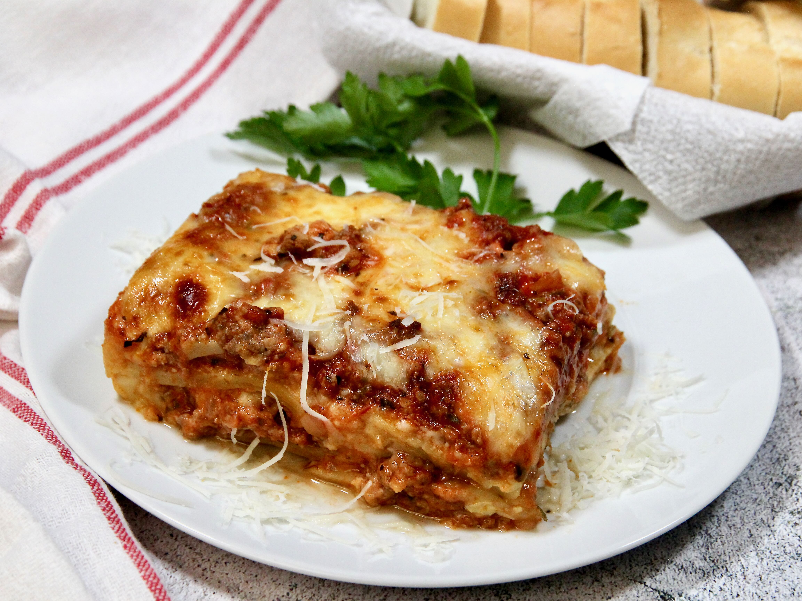

Lasagna

Fresh lasagna made in just a few easy steps!
Follow this easy to make recipe to create a delicious
and non-diet friendly lasagna. Your kids, husband,
neighbors, or whoever you are entertaining will be
impressed!
Ingredients:
- 1/2 lb lean ground meat
- 1/2 cup minced onion
- 1 Can of tomato sauce, 28 ounces
- 1 Can of crushed tomatoes, 8 ounces
- 2 Tbsp Parsley, divided
- 1 Clove garlic, crushed
- 1 dash of sugar
- 1 1/2 tsp dried basil
- 1 1/2 tsp salt
- 1/2 tsp dried oregano
- 1 (16oz) package lasagna noodles
- 1 lb small-curd cottage cheese
- 3/4 cup grated Parmesan Cheese
- 3 large eggs
- 2 tsp Salt
- 1/4 tsp ground black pepper
- 1 (16 oz) package shredded mozzarella cheese
Steps
- Combine pork and ground beef in a large, deep skillet over medium-high heat; cook and stir until browned and crumbly, 5 to 7 minutes. Add onion and cook until translucent, about 5 minutes.
- Stir in crushed tomatoes, tomato sauce, 1 tablespoon fresh parsley, garlic, basil, salt, oregano, and sugar. Reduce heat to medium-low and simmer, stirring occasionally, for 30 minutes.
- While the sauce is simmering, bring a large pot of lightly salted water to a boil. Cook lasagna noodles in the boiling water, stirring occasionally, until tender yet firm to the bite, 8 to 10 minutes. Drain and set aside.
- While the noodles are cooking, preheat the oven to 375 degrees F (190 degrees C).
- Mix cottage cheese, Parmesan cheese, eggs, remaining 1 tablespoon fresh parsley, salt, and pepper in a large bowl until combined.
- Assemble lasagna: Spread a spoon or two of sauce over the bottom of a 9x13-inch baking dish just to to coat it. Place two layers of noodles over the sauce to cover. Layer with 1/2 of the cheese mixture, 1/2 of the remaining sauce, and 1/2 of the mozzarella cheese. Repeat layers once more using the remaining noodles, cheese mixture, sauce, and mozzarella. Cover the baking dish with aluminum foil.
- Bake in the preheated oven for 30 to 40 minutes. Remove the foil and bake until cheese is golden brown, 5 to 10 more minutes.
- Remove from the oven and let stand for 10 minutes before cutting and serving.
Tips
Feel free to substitute ricotta cheese for the cottage cheese for a more traditional cheese filling. You can also add layers of veggies (such as spinach and mushrooms) when layering your lasagna.
Home Page